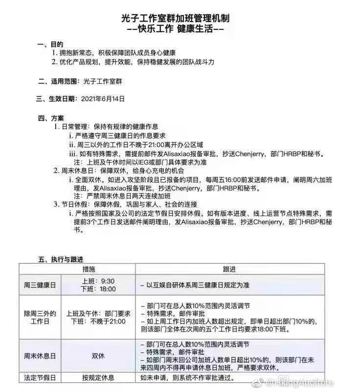

南湖印务为什么给我分配了一个阴间字体

HkingAuditore
2021-06-10
HkingAuditore
2021-06-10
昨晚逼乎发的数学一天了都没人赞，发个unity半小时就好几个收藏了，几个意思，瞧不起我的数学吗
HkingAuditore
2021-06-10
阳间作息
- 
HkingAuditore
2021-06-10
高三考完了，大四毕业了，也就是说我也大四了。
大学生活过得好快啊，我现在还觉得刚入学没多久嘞。
今天看到有人推着箱子走了，拍毕业照的也没有前几天的多了。想到初二那会儿，当时和xyt去食堂，路上看到初三的在拍毕业照，我和他说，明年我们也要去拍了。不知道为什么这一幕印象非常深刻，转眼现在都要大四了，我还觉得那天过去没多久。我真怀疑每次说这种话的时候是不是会给人生存个档。
其实我怕挺怕拍照留念环节的。今天很有生之年地收到了毕业一起拍照的邀请，还蛮诧异的。我想了下，自己初中和高中毕业的时候，只留下了一张集体照，并没有人找我来拍，果然我讨人嫌是一脉相承的。虽然知道自己很丑上不得镜，但看着除了我大家都打成一片，心里总是有点难受。
感觉小学之后自己的社交焦虑就越来越严重，初中高中大学一直都是，朋友并不多哩，但是总感觉自己根本走不进大群体，像个刺，拔不出来，融不进去。高三那会儿前男友有女朋友不理我之后尤其明显
留下了后遗症，到现在我都很敏感身边这脆弱的社交关系，说战战兢兢不为过，非常害怕被丢掉。
今天把大一时候写的线性代数笔记重新整理了一遍，准备全部发知乎。之前发微信公众号被吐槽别再发学习了，搞得我emo一段了时间
太在意别人的想法真的活得很累啊
大学生活过得好快啊，我现在还觉得刚入学没多久嘞。
今天看到有人推着箱子走了，拍毕业照的也没有前几天的多了。想到初二那会儿，当时和xyt去食堂，路上看到初三的在拍毕业照，我和他说，明年我们也要去拍了。不知道为什么这一幕印象非常深刻，转眼现在都要大四了，我还觉得那天过去没多久。我真怀疑每次说这种话的时候是不是会给人生存个档。
其实我怕挺怕拍照留念环节的。今天很有生之年地收到了毕业一起拍照的邀请，还蛮诧异的。我想了下，自己初中和高中毕业的时候，只留下了一张集体照，并没有人找我来拍，
感觉小学之后自己的社交焦虑就越来越严重，初中高中大学一直都是，朋友并不多哩，但是总感觉自己根本走不进大群体，像个刺，拔不出来，融不进去。高三那会儿前男友有女朋友不理我之后尤其明显
今天把大一时候写的线性代数笔记重新整理了一遍，准备全部发知乎。之前发微信公众号被吐槽别再发学习了，搞得我emo一段了时间
太在意别人的想法真的活得很累啊